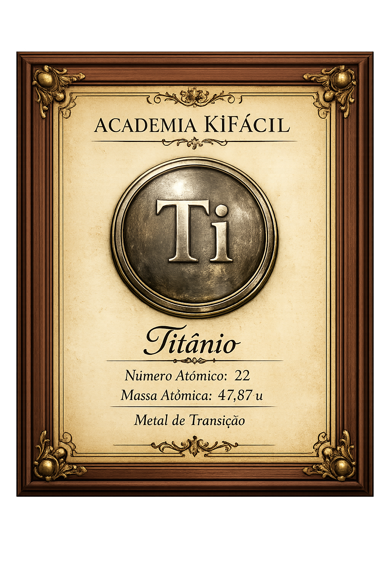

You mastered Titanium's electron configuration and correctly organized every electron into the electron shells.
This site uses cookies to improve your experience. By continuing to browse, you agree to our Privacy Policy.